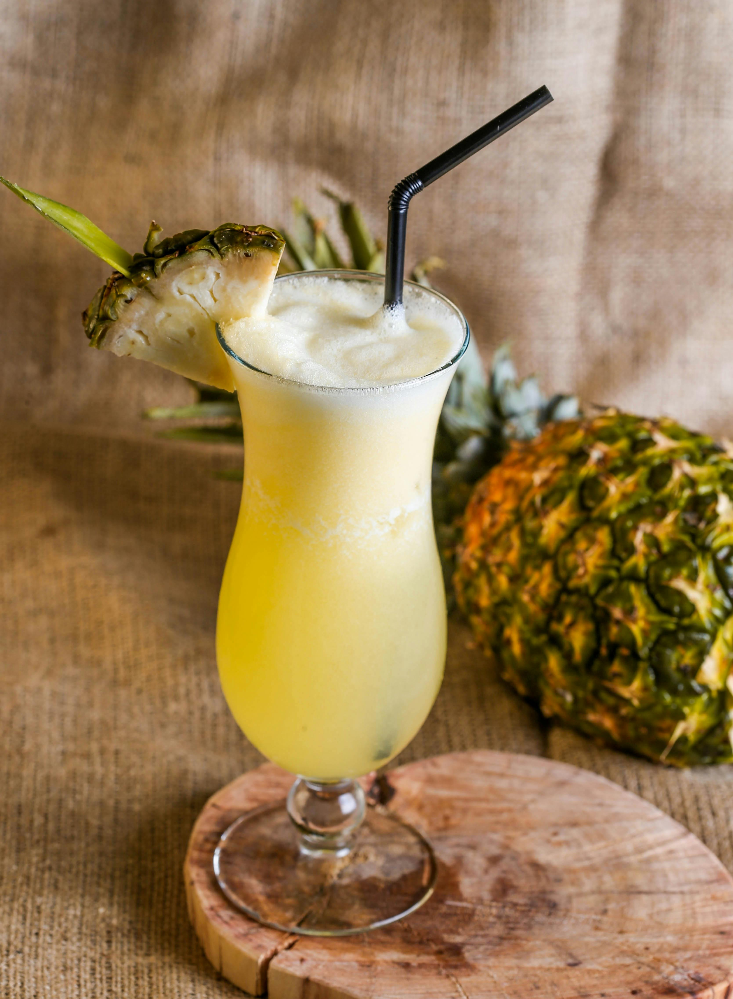

Piña Colada

Yield: 4 servings
Sweet, creamy, and endlessly refreshing, this classic piña colada is like a vacation in a glass. Blending juicy pineapple, smooth coconut cream, and a splash of rum (optional!), it’s the ultimate summer escape, whether you’re lounging on the beach or relaxing in your backyard. With just a few simple ingredients, you’ll have a tropical treat that feels both indulgent and effortless. Serve it in a hollowed-out coconut for extra flair and island vibes, fit for any festive gathering or cozy night under the stars.
Ingredients
- 1 small ripe pineapple
- 1 (13.5 to 14 oz) can unsweetened coconut cream
- 2/3 cup granulated sugar
- Kosher salt
- 1 1/2 cups good-quality unsweetened coconut water (preferably fresh)
- 1/3 cup fresh lime juice (from about 3 limes)
- 2/3 cups (3 fl oz) dark rum
- 2 cups ice cubes
- 4 hollowed-out coconut shells or pineapples (optional)
Special Equipment Needed
Steps
- Prep the Pineapple: Place the pineapple on its side and slice off the top and bottom. Stand it upright and carefully cut away the rind, following the curve of the fruit. Trim off any remaining brown “eyes.” Cut the pineapple into quarters lengthwise, then slice each quarter in half again to make 8 long wedges. Remove the core from each wedge, then cut them crosswise into ½-inch chunks—about 6 cups total.
- Freeze the Pineapple: Spread the pineapple pieces on a large baking sheet in a single layer and freeze until completely solid.
- Make the Cream of Coconut: In a medium saucepan over medium heat, whisk together the coconut cream, sugar, and ¼ teaspoon of salt. Bring to a gentle simmer and cook, stirring often and scraping down the sides, until the mixture reduces by half (to about 1 cup) and thickens to a syrupy texture, 50–60 minutes. The color will shift from milky white to a pale, translucent pink. If it begins to separate, don’t worry - just keep stirring until it smooths out again. Transfer to a small bowl and let cool completely; it will thicken as it cools.
- Serve and enjoy! Pour into hollowed-out coconut shells or tall glasses. Garnish with a cocktail umbrella and a fun straw!
Want a non-alcoholic version?
Swap the rum for extra coconut water or your favorite tropical fruit juice for a refreshing booze-free version!
Home